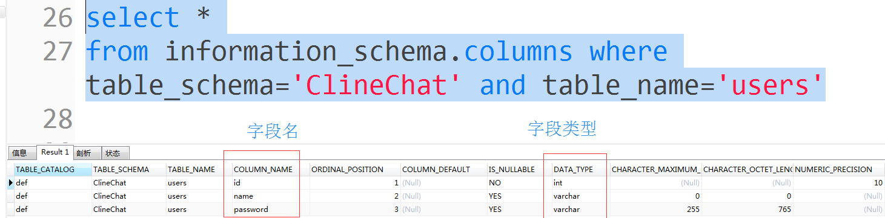

原文出处:本文由博客园博主千机仞雪提供。
原文连接:https://www.cnblogs.com/my1227/p/11760023.html
原文连接:https://www.cnblogs.com/my1227/p/11760023.html
一、SQLServer命令
1、查询SQLServer中的每个数据库
SELECT * from sysdatabases
2、查询SQLServer中指定数据库的所有表名
select name from CFS.. sysobjects where xtype='u' #注意：CFS 是数据库名称
3、查询表中的字段以及字段类型
select COLUMN_name as name,data_type as type
from INFORMATION_SCHEMA.COLUMNS
where table_name = '表名'
二、MySQL命令
1、查询MySQL中的每个数据库
show DATABASES
2、查询MySQL中指定数据库的所有表名
select table_name as name
from information_schema.tables
where table_schema = '数据库名' and table_type = 'base table'

3、查询表中的字段以及字段类型
select COLUMN_NAME as name,DATA_TYPE as type from information_schema.columns where table_schema='表名'

三、ORCAL命令
1、查询ORCAL中的每个数据库
select * from v$tablespace
2、查询ORCAL中指定数据库的所有表名
select * from user_tables;
3、查询表中的字段以及字段类型
select column_name from user_tab_columns where table_name = 'table_name';--表名要全大写